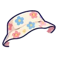
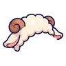
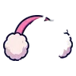
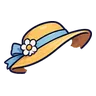

หมวกแฟชั่น
หมวกแฟชั่น 20 ชิ้น
| ชื่อ | Lv | ค่าสถานะ | ได้จาก |
|---|---|---|---|
| เบเร่ต์สตรอว์เบอร์รี | 1 | — | กาชา |
| หมวกเชฟ | 1 | — | กาชา |
| บีนนี่หูหมี | 1 | — | กาชา |
| โบว์ใหญ่ | 1 | — | กาชา |
| หมวกกะลาสี | 1 | — | กาชา |
 หมวกบักเก็ตลายดอก | 1 | — | กาชา |
| ที่คาดผมหูจิ้งจอก | 1 | — | กาชา |
| หมวกปาร์ตี้ลายจุด | 1 | — | กาชา |
| มงกุฎกระดาษวันเกิด | 1 | — | กาชา |
 หมวกแกะขนฟู | 1 | — | กาชา |
| หมวกเพนกวิน | 1 | — | กาชา |
| หมวกสตรอว์เบอร์รี | 1 | — | กาชา |
| หมวกแอกโซลอเติล | 1 | — | กาชา |
| หมวกพุดดิ้งคาราเมล | 1 | — | กาชา |
| บีนนี่เขากวาง | 1 | — | กาชา |
| หมวกทรงสูงจิ๋ว | 1 | — | กาชา |
 ที่ปิดหูปุยนุ่ม | 1 | — | กาชา |
 หมวกฟางปีกกว้างผูกริบบิ้น | 1 | — | กาชา |
| ฮู้ดฉลาม | 1 | — | กาชา |
| 1 | — | กาชา |